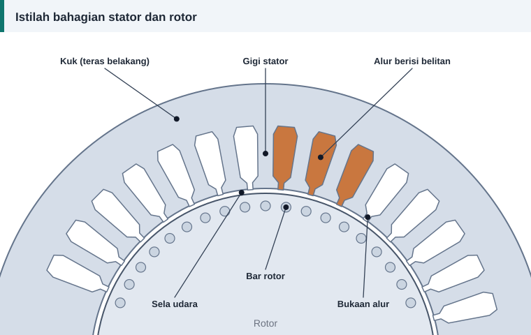

Rujukan
Glosari Istilah Lilitan Motor: Bahasa Melayu dan Inggeris
Buku rujukan dan video tentang lilitan motor kebanyakannya dalam bahasa Inggeris. Glosari ini memadankan istilah Melayu yang digunakan di laman ini dengan istilah Inggerisnya.


Bahagian motor
| Istilah | Bahasa Inggeris | Maksud ringkas |
|---|---|---|
| Stator | Stator | Bahagian pegun yang membawa belitan |
| Rotor | Rotor | Bahagian yang berpusing |
| Teras | Core | Tindanan laminasi keluli yang membawa fluks |
| Laminasi | Lamination | Kepingan keluli nipis bersalut penebat |
| Alur | Slot | Lurah pada teras tempat gegelung diletakkan |
| Gigi | Tooth | Bahagian teras di antara dua alur |
| Kuk | Yoke, back iron | Bahagian teras di belakang alur |
| Sela udara | Air gap | Ruang antara stator dan rotor |
| Galas | Bearing | Penyokong aci |
| Aci | Shaft | Batang berpusing yang menghantar tork |
| Rangka | Frame | Badan luar motor |
| Kotak terminal | Terminal box | Tempat sambungan bekalan |
Belitan
| Istilah | Bahasa Inggeris | Maksud ringkas |
|---|---|---|
| Belitan | Winding | Keseluruhan gegelung yang membentuk satu litar |
| Gegelung | Coil | Sekumpulan lilitan yang dililit bersama |
| Lilitan | Turn | Satu pusingan dawai |
| Kumpulan gegelung | Coil group | Gegelung bersebelahan bagi satu fasa di bawah satu kutub |
| Sisi gegelung | Coil side | Bahagian gegelung yang terletak di dalam alur |
| Hujung belitan | End winding, overhang | Bahagian gegelung di luar teras |
| Rentang gegelung | Coil span, coil pitch | Bilangan alur yang direntangi gegelung |
| Pic kutub | Pole pitch | Bilangan alur bagi setiap kutub |
| Belitan lap | Lap winding | Gegelung serupa yang bertindih |
| Belitan sepusat | Concentric winding | Gegelung berpusat sama dengan saiz berlainan |
| Satu lapis, dua lapis | Single layer, double layer | Satu atau dua sisi gegelung dalam setiap alur |
| Laluan selari | Parallel paths | Litar selari di dalam satu fasa |
| Dawai selari | Strands in hand | Beberapa dawai dililit bersama sebagai satu konduktor |
Pengiraan
| Istilah | Bahasa Inggeris | Maksud ringkas |
|---|---|---|
| Faktor pic | Pitch factor | Kesan memendekkan rentang gegelung |
| Faktor agihan | Distribution factor | Kesan mengagih gegelung dalam beberapa alur |
| Faktor belitan | Winding factor | Hasil darab faktor pic dan faktor agihan |
| Fluks | Flux | Jumlah medan magnet melalui satu luas |
| Ketumpatan fluks | Flux density | Fluks bagi setiap unit luas, dalam tesla |
| Ketumpatan arus | Current density | Arus bagi setiap unit luas konduktor |
| Faktor isian | Slot fill factor | Nisbah luas kuprum kepada luas alur |
| Laju segerak | Synchronous speed | Laju medan magnet berpusing |
| Gelincir | Slip | Beza laju antara medan dan rotor |
| Panjang purata lilitan | Mean length of turn | Purata panjang dawai bagi satu lilitan |
Bahan dan ujian
| Istilah | Bahasa Inggeris | Maksud ringkas |
|---|---|---|
| Dawai berenamel | Enamelled wire, magnet wire | Dawai kuprum bersalut penebat nipis |
| Pelapik alur | Slot liner | Penebat di antara gegelung dan teras |
| Baji | Wedge | Penutup mulut alur |
| Pemisah fasa | Phase insulation | Penebat di antara kumpulan fasa berlainan |
| Varnis | Varnish | Resin pengikat dan pelindung belitan |
| Kelas penebat | Insulation class | Had suhu sistem penebat |
| Rintangan penebatan | Insulation resistance | Rintangan di antara belitan dan teras |
| Litar pintas | Short circuit | Sentuhan tidak sengaja antara konduktor |
| Beban lampau | Overload | Arus yang melebihi kadaran |
Nota tentang istilah
Di bengkel, perkataan Inggeris seperti rewinding, slot, coil dan pitch digunakan silih berganti dengan istilah Melayu. Laman ini memilih bentuk yang paling mudah difahami oleh juruteknik, dan mengekalkan satu istilah bagi satu maksud di semua artikel.
Untuk jawapan ringkas kepada soalan yang kerap ditanya, lihat soal jawab lazim.
Rujukan dan bacaan lanjut
Artikel berkaitan
Apa Itu Lilitan Semula Motor dan Bila Ia Diperlukan
Lilitan semula menggantikan belitan kuprum yang rosak supaya motor berfungsi seperti asal. Kenali bahagian motor, tanda kerosakan belitan dan proses asasnya di sini.
Soal Jawab Lazim Tentang Lilitan Semula Motor
Jawapan ringkas kepada soalan yang paling kerap ditanya tentang lilitan semula motor: data hilang, saiz dawai, bilangan lilitan, varnis, ujian dan kos.
Belitan Lap dan Belitan Sepusat: Cara Mengenal dan Melilitnya
Dua bentuk gegelung paling biasa ditemui dalam stator motor aruhan ialah lap dan sepusat. Ketahui rupa, kelebihan, cara membaca rentangnya dan bila setiap satu digunakan.